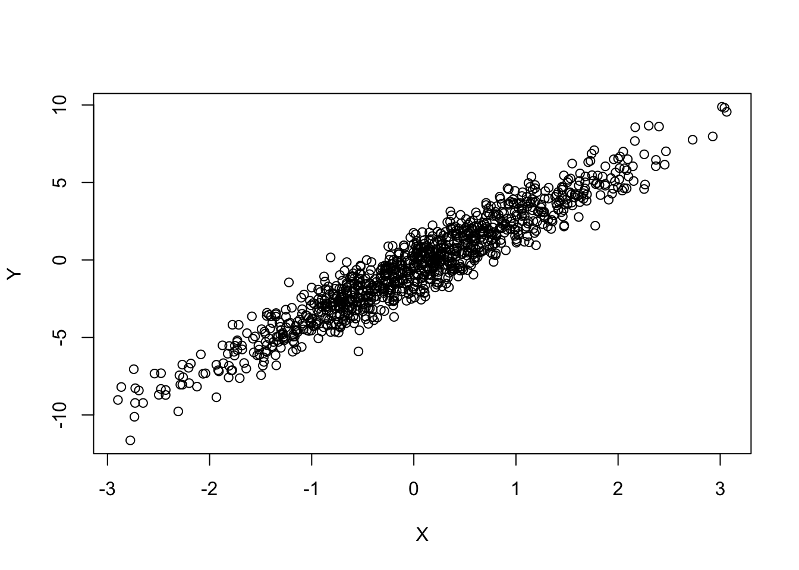
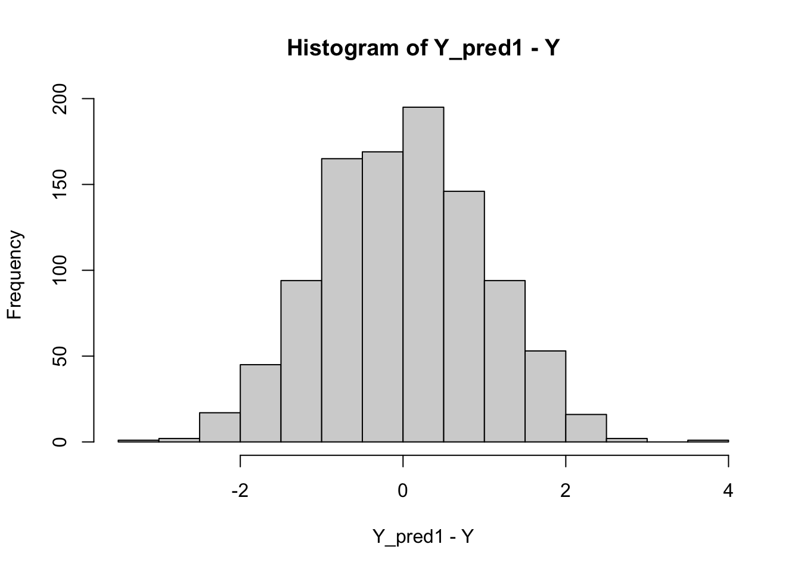
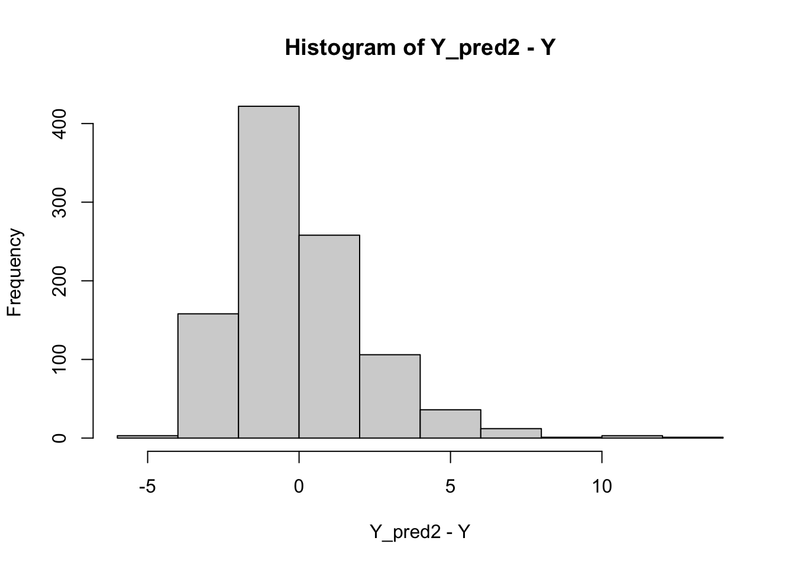

Read my latest on 5 lessons from political science to help rebuild Syria in The Conversation.
All Your Data R Fixed
Transforming Your RHS Covariates Won’t Fix Your Outcome Distribution
In all conventional regression models, the data are fixed–they don’t have a probability distribution. This means transforming your data with logs or other functions won’t change the probability distribution of your outcome.
R
Statistics
Linear Models
Probability Theory
Author
Robert Kubinec
Published
February 2, 2026
I posted today about something that people often get confused when implementing regression models:
One area of statistical modeling I wish people knew more about:
*The distribution of your right-hand side (independent) variables does not matter.*
It's the distribution of your outcome/response that matters. Your data are fixed. They do not have a distribution.*
So no need to do log GDP/income!
As I expected, I got a lot of questions, so I thought I would expand on this important yet poorly-understood point about statistical models. In this post, I use simulations to show how OLS (and most other modeling frameworks like GLMs, etc.) assume that the data are fixed–only the outcome/response has a probability distribution. As a result, while the distribution of your data is important for inference and interpretability–you want your regression model to estimate the effect you care about–whatever transformations you put your covariates through won’t change whether your outcome is actually Normal, Exponential, Poisson, or whatever.
The distribution of your outcome–whether to use OLS or something else–is a separate question that requires you to think through what kind of process your outcome represents, and whether the probability distribution matches that process. There’s no “smoking gun” that can answer that for you without requiring critical reflection. As a result, the oft-used tests for Normality can be easily fooled–like the very common residual histograms and Q-Q plots, as I’ll show in this post.
A Bit of Background (Don’t Worry, It’s Short)
When we do inference with statistics, 99% of the time we are examining a conditional probability distribution. That means we have some outcome we want to study, call it \(Y\), which we believe has uncertainty. We also have some explanatory factor (causal or otherwise), which we’ll call \(X\). Then we can compare the conditional distribution of \(Y\) for different values of \(X\).
To make it really simple, suppose \(X\) has only two values, 0 and 1–like most RCTs in which we have a treatment and a control group. We’ll also say we want to explain \(Y=1\), which we’ll call recovery from sickness. Then we would say the treatment \(X=1\) is effective if Pr(Y=1|X=1) > Pr(Y=1|X=0). We can read that as the probability of recovery \(Y=1\) if \(X=1\) (treatment) is greater than the probability of recovery \(Pr(Y=1)\) if \(X=0\) (control).
While this simple example only has one \(X\) value, we could have many covariates, such as in multiple regression models. In that case, we often want to know about the conditional probability distribution of \(Y\) given multiple \(X\)s, as in \(Pr(Y|X_1, X_2, ... X_N)\). What is important about these formulas is that we are only discussing the probability of \(Y\). There’s nothing about a conditional probability distribution that says anything about what is “given”, or on the right-hand side of the bar. \(X\) just comes down like manna from heaven.
Our standard linear models don’t ask questions about whether the values for \(X\) makes sense or not. We simply calculate the probability of the outcome conditional on whatever data we have. To paraphrase Otto von Bismarck, regression models are a bit like sausages; it’s best not see them being made. 😬
Let Us Now Regress
When we start doing ordinary least squares (OLS) regression, or the default workhouse for many scientists, we add in some parameters (coefficients) to the conditional probability distribution like so:
\[
Pr(Y|\alpha + \beta X)
\]
where \(\alpha\) is our intercept and \(\beta\) is the slope or “effect” of \(X\) on \(Y\). Now, the parameters are not like \(X\)–they are not known a priori. We have to estimate them, and in particular we want to find the most likely values of \(\alpha\) and \(\beta\) given what we know of \(Y\) and \(X\). For OLS, we’ll figure out what the \(\alpha\) and \(\beta\) are that minimize the squared differences, or residuals, between the estimated mean of \(Y\), which is \(\alpha + \beta X\), and the actual observed values for \(Y\).
We can also write the same distribution in the following very familiar form for OLS:
\[
Y = \alpha + \beta X + \epsilon
\]
where \(\epsilon\) are the residuals and, we assume, are Normally distributed. That’s why people often want to check the residuals to see if they look Normal (personally, I don’t think this is very useful, but not the issue at the moment).
So what if we do something to \(X\)? Say we take a logarithm of \(X\) as so:
\[
Y = \alpha + \beta \text{ log } X + \epsilon
\]
Does this change the probability distribution/uncertainty of \(Y\)? No. It changes how we interpret our coefficient \(\beta\) because we changed how \(X\) is measured; it is now measures in log units (base \(e\)). But \(Y\) is just as Normally-distributed as it was before we did that. Why is this the case? Because our model involves calculating the conditional probability (distribution) of \(Y\) for each value of \(X\). What values of \(X\) we have to decide when we make our data. Then we calculate \(Y\)conditional on \(X\).
Seeing is Believing
I’ll demonstrate this by simulating a Normally-distributed \(Y\) and a covariate \(X\) to see how the uncertainty is calculated for \(Y\) and the regression coefficients \(\alpha\) and \(\beta\).
Show the code
set.seed(6633771)N <-1000# generate X as a random Normal bunch of numbers (meaningless)X <-rnorm(N, mean=0, sd=1)# parametersalpha <--0.5beta <-3.2# generate Y conditional on X and parametersY <-rnorm(N, mean = alpha + beta * X, sd=1)plot(X,Y)

The plot shows the bivariate relationship between \(X\) and \(Y\). We can calculate the estimated regression coefficients with OLS with the lm command:
Show the code
y_reg <-lm(Y ~ X)summary(y_reg)
Call:
lm(formula = Y ~ X)
Residuals:
Min 1Q Median 3Q Max
-3.6751 -0.6777 -0.0177 0.7298 3.2442
Coefficients:
Estimate Std. Error t value Pr(>|t|)
(Intercept) -0.53014 0.03181 -16.66 <2e-16 ***
X 3.13281 0.03110 100.72 <2e-16 ***
---
Signif. codes: 0 '***' 0.001 '**' 0.01 '*' 0.05 '.' 0.1 ' ' 1
Residual standard error: 1.005 on 998 degrees of freedom
Multiple R-squared: 0.9104, Adjusted R-squared: 0.9103
F-statistic: 1.014e+04 on 1 and 998 DF, p-value: < 2.2e-16
Our intercept is quite close to “true” \(\alpha\) of -0.5 and our coefficient for \(\beta\) is quite close to the true value as well (+3.2). Next we can examine the residuals, that is, the difference between actual \(Y\) and our model’s prediction of \(Y\) conditional on the estimated values of \(\alpha\) and \(\beta\):
Show the code
Y_pred1 <-predict(y_reg)hist(Y_pred1 - Y)

Do those look pretty Normal? Yep.
Ok, now let’s exponentiate \(X\) and see if it changes those residuals:
Show the code
y_reg2 <-lm(Y ~I(exp(X)))summary(y_reg2)
Call:
lm(formula = Y ~ I(exp(X)))
Residuals:
Min 1Q Median 3Q Max
-12.5372 -1.0818 0.4257 1.5209 4.1626
Coefficients:
Estimate Std. Error t value Pr(>|t|)
(Intercept) -2.3968 0.0897 -26.72 <2e-16 ***
I(exp(X)) 1.1440 0.0320 35.75 <2e-16 ***
---
Signif. codes: 0 '***' 0.001 '**' 0.01 '*' 0.05 '.' 0.1 ' ' 1
Residual standard error: 2.224 on 998 degrees of freedom
Multiple R-squared: 0.5615, Adjusted R-squared: 0.561
F-statistic: 1278 on 1 and 998 DF, p-value: < 2.2e-16
Did the \(\beta\) coefficient change? Sure did. That’s because we transformed \(X\). Does that change the residuals? Is \(Y\) any more or less Normal?
Let’s check:
Show the code
Y_pred2 <-predict(y_reg2)hist(Y_pred2 - Y)

Oh no! Now my residuals are skewed! Is \(Y\) no longer Normal? 😱
Hold on a second – \(Y\) is Normally-distributed because I just sampled Y from a Normal distribution. Of course it’s still distributed as Normal. What changed is that my model is mis-specified–that is, I simulated \(Y\) conditional on a linear function of \(X\), and then I added a non-linear function of \(X\) that wasn’t part of the simulation (i.e., the true data-generating process). That bias ends up being absorbed in the residuals, making \(Y\) look non-Normal (when it actually is). In other words, the residuals of \(Y\) are only Normally-distributed if the mean of \(Y\), the linear model, is correctly specified 🤦♂️.
So anyways… residual plots are not perfect evidence of Normality! They can be evidence of all kinds of things. All models are assumptions, and we cannot test them directly. We have to reason about them using our knowledge of the data-generating process that led to \(Y\) given \(X\) and whether the Normal distribution is an appropriate representation of that process (thankfully, it is a good representation for a wide array of continuous outcomes!).
You might be thinking, though, OK, fine, \(X\) is fixed, but the regression coefficients aren’t. They’re uncertain!
Very true. BUT, that uncertainty does not come from uncertainty in \(X\).1 It comes from random variation in \(Y\).
Don’t believe me? We can test that in an experiment by simulating 1,000 regressions in which we keep drawing a new value for \(Y\) but keeping \(X\) the same in each simulation. Then we’ll fit the regression and save the estimated value of \(\beta\) and \(\alpha\) to see what the “true” uncertainty is and whether that matches the standard errors for the coefficients that we estimated above with OLS.
Show the code
over_sims <-lapply(1:1000, function(i) {# X, alpha and beta stay the same, just make a new Y this_y <-rnorm(N, mean = alpha + beta * X, sd=1) this_y_reg <-lm(this_y ~ X)tibble(alpha=coef(this_y_reg)['(Intercept)'],beta=coef(this_y_reg)['X'])}) |>bind_rows()# note: to make them match, I need to do a degrees of freedom correction for# 2 parameters (alpha and beta)print(paste0("True SE of the Intercept: ", sd(over_sims$alpha)*sqrt(N/(N-2))))
[1] "True SE of the Intercept: 0.0314630304165492"
Show the code
print(paste0("True SE of Beta: ", sd(over_sims$beta)*sqrt(N/(N-2))))
[1] "True SE of Beta: 0.0306822342074311"
Show the code
# now get it from the OLS modelols_ses <-summary(y_reg)print(paste0("OLS SE of the Intercept: ", ols_ses$coefficients[1,'Std. Error']))
[1] "OLS SE of the Intercept: 0.0318141439275897"
Show the code
print(paste0("OLS SE of Beta: ", ols_ses$coefficients[2,'Std. Error']))
[1] "OLS SE of Beta: 0.0311041768336286"
You can see that the true SE of the parameters \(\alpha\) and \(\beta\), which we estimated with simulations, are pretty close to the estimated SEs using OLS. Pretty cool! Note, though, that in the simulation we only simulated \(Y\) using the Normal distribution (rnorm). We did not change\(X\),\(\alpha\), or\(\beta\). As a result, all of the uncertainty in our estimates for \(\alpha\) and \(\beta\) came from uncertainty in \(Y\), not\(X\).
What if \(X\) also had random noise such that our data have measurement error? What if every simulation draw, we only had one possible dataset \(\hat{X}\) with some unobservable measurement error \(\sigma_X\) instead of the true data \(X\)?
Well let’s change our simulation to do just that:
Show the code
# amount of noise we'll add to X# assume measurement error is also Normalsigma_x <-0.5# we'll draw and re-fit our vanilla OLS model to make it comparable to the new simulationnew_X <-rnorm(N, mean=X, sd = sigma_x)Y_meas_err <-rnorm(N, mean = alpha + beta * X, sd=1)y_reg_meas_err <-lm(Y_meas_err ~ new_X)over_sims_rando_X <-lapply(1:1000, function(i) {# draw a new random X = measurement error from true X new_X <-rnorm(N, mean=X, sd = sigma_x)# alpha and beta, true X stay the same this_y <-rnorm(N, mean = alpha + beta * X, sd=1)# measurement error in X vs true X this_y_reg <-lm(this_y ~ new_X)tibble(alpha=coef(this_y_reg)['(Intercept)'],beta=coef(this_y_reg)['new_X'])}) |>bind_rows()print(paste0("True SE of the Intercept: ", sd(over_sims_rando_X$alpha)*sqrt(N/(N-2))))
[1] "True SE of the Intercept: 0.0527043263598513"
Show the code
print(paste0("True SE of Beta: ", sd(over_sims_rando_X$beta)*sqrt(N/(N-2))))
[1] "True SE of Beta: 0.0437944272599339"
Show the code
# now get it from the OLS modelols_meas_err_ses <-summary(y_reg_meas_err)print(paste0("OLS SE of the Intercept: ", ols_meas_err_ses$coefficients[1,'Std. Error']))
[1] "OLS SE of the Intercept: 0.0543524887148683"
Show the code
print(paste0("OLS SE of Beta: ", ols_meas_err_ses$coefficients[2,'Std. Error']))
[1] "OLS SE of Beta: 0.0473542014008247"
You can see that the standard error of the \(\alpha\) and \(\beta\) parameters for OLS has increased relative to the true SEs for the parameters. Why? Because now each simulation draw we are adding in some Normally-distributed measurement noise, sigma_X, to our “true” data \(X\). That is, our data will vary for each draw (X_new) along with the outcome \(Y\). In this case, the standard OLS estimate of the SE of the parameters will be too low because OLS assumes that \(X\) is measured without error (i.e., is true or fixed).
What If the Slopes/Coefficients Are Random?
Another important point about this presentation is that OLS (and other standard statistical models) also assume that \(\alpha\) and \(\beta\) are fixed: they don’t vary as \(Y\) is repeatedly sampled. If we also make the coefficients, such as \(\beta\), random, we will get the right average (expected) value of the coefficient, but the SEs will again be off vs. vanilla OLS:
Show the code
# noise around betasigma_beta <-0.25# number of groups for betan_group <-20# group IDgroup_id <-rep(1:n_group, each=N/n_group)# we'll draw and re-fit our vanilla OLS model to make it comparable to the new simulationbeta_new <-rnorm(n_group, mean=beta, sd = sigma_beta)Y_rand_slope <-rnorm(N, mean = alpha + (beta_new[group_id]) * X, sd=1)y_reg_rand_slope <-lm(Y_rand_slope ~ X)over_sims_rando_beta <-lapply(1:1000, function(i) {# fixed X, draw beta from a Normal distribution around true beta# for number of groups in data beta_new <-rnorm(n_group, mean=beta, sd = sigma_beta)# alpha and beta, true X stay the same this_y <-rnorm(N, mean = alpha + (beta_new[group_id]) * X, sd=1)# measurement error in X vs true X this_y_reg <-lm(this_y ~ X)tibble(alpha=coef(this_y_reg)['(Intercept)'],beta=coef(this_y_reg)['X'])}) |>bind_rows()print(paste0("True SE of the Intercept: ", sd(over_sims_rando_beta$alpha)*sqrt(N/(N-2))))
[1] "True SE of the Intercept: 0.0321117764806149"
Show the code
print(paste0("True SE of Beta: ", sd(over_sims_rando_beta$beta)*sqrt(N/(N-2))))
[1] "True SE of Beta: 0.0630173544464951"
Show the code
# now get it from the OLS modelols_rand_slope_ses <-summary(y_reg_rand_slope)print(paste0("OLS SE of the Intercept: ", ols_rand_slope_ses$coefficients[1,'Std. Error']))
[1] "OLS SE of the Intercept: 0.0314816825765908"
Show the code
print(paste0("OLS SE of Beta: ", ols_rand_slope_ses$coefficients[2,'Std. Error']))
[1] "OLS SE of Beta: 0.0307791347179157"
In this case, OLS underestimates the uncertainty in \(\beta\) by assuming \(\beta\) is fixed with respect to \(Y\). This additional source of uncertainty is un-modeled because the slope \(\beta\) is varying across different groups in the data (even though on average the OLS estimate of \(\beta\) is un-biased, or equal to the true value). However, we can use a linear mixed model via the R package lme4 with random slopes to capture that uncertainty in \(\beta\) a bit better:
Show the code
library(lme4)
Loading required package: Matrix
Attaching package: 'Matrix'
The following objects are masked from 'package:tidyr':
expand, pack, unpack
Show the code
# now get it from the lmer modeldat <-tibble(Y_rand_slope=Y_rand_slope,X=X,group_id=group_id)lmer_fit <-lmer(Y ~ X + (0+ X | group_id), data = dat, REML =TRUE)lmer_sum <-summary(lmer_fit)print(paste0("lmer SE of Beta: ", lmer_sum$coefficients[2,'Std. Error']))
[1] "lmer SE of Beta: 0.0357215526614292"
Show the code
print(paste0("OLS SE of Beta: ", ols_rand_slope_ses$coefficients[2,'Std. Error']))
[1] "OLS SE of Beta: 0.0307791347179157"
Show the code
print(paste0("True SE of Beta: ", sd(over_sims_rando_beta$beta)*sqrt(N/(N-2))))
[1] "True SE of Beta: 0.0630173544464952"
lme4 estimate is noticeably larger than vanilla OLS 🙌, though still a bit low–which could be sampling error, or just the known fact that maximum-likelihood random effects slightly under-estimate the variance of the random effects–I’ll let the reader explore that one on their own 😁. It would also be possible to adjust the OLS standard errors with clustering around group_id.
In summary, though, you can’t truly know the probability distribution of the outcome, \(Y\). Residuals are a hint but nothing more. And, assuming \(X\) has no measurement error is a fairly strong assumption. Often we can’t do much about it… but sometimes we can. And if you’re interested to learn more about measurement modeling, see my R package idealstan: https://saudiwin.github.io/idealstan/vignettes/Package_Introduction.html.
Footnotes
It’s important to note here that if I add more variance to the data while keeping \(\beta\) fixed, I will “explain” more of \(Y\) because I have more information in the data with which to model \(Y\). Consequently the standard errors of regression coefficients will go down. But that has nothing to do with sampling uncertainty in \(X\). Where the data come from, the model does not say.↩︎